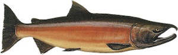
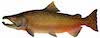
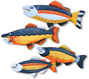
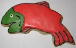
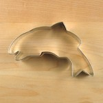
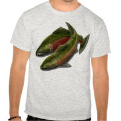

Seattle Location
serving salmon cookies since 2012
Come visit us in our original Seattle location! We serve freshly baked salmon cookies each day. Our cookies are prepared in-house by our friendly and welcoming staff. Enjoy a cup of coffee on our terrace as you enjoy your delicious salmon-flavored dessert.
Hours: daily from 6:00 a.m. to 7:00 p.m
Phone: 206-555-1234
Address: 1234 Salmon Cookie Way Seattle, WA
Tokyo Location
serving salmon cookies since 2015
Come visit us in our first-ever international location. We serve freshly baked salmon cookies each day. Our cookies are prepared in-house by our friendly and welcoming staff.
Hours: open daily from 6:00 a.m. to 7:00 p.m
Phone: 206-555-1234
Address: 1234 Salmon Ave Tokyo, Japan
Paris Location
serving salmon cookies since 2016
Our Paris location sits in the shadows of the Eiffel tower, where we serve freshly baked salmon cookies each day. Our cookies are prepared in-house by our friendly and welcoming staff.
Hours: open daily from 6:00 a.m. to 7:00 p.m
Phone: 206-555-1234
Address: 234 Salmon Ave Paris, FR
Dubai Location
serving salmon cookies since 2018
Please visit our Dubai location! We serve freshly baked salmon cookies each day. Our cookies are prepared in-house by our friendly and welcoming staff.
Hours: open daily from 6:00 a.m. to 7:00 p.m
Phone: 206-555-1234
Address: 1234 Salmon Ave Dubai, UAE
Lima Location
serving salmon cookies since 2019
Sample the best of Peru by tasting one of our Salmon Cookies! We serve freshly baked salmon cookies each day. Our cookies are prepared in-house by our friendly and welcoming staff.
Hours: open daily from 6:00 a.m. to 7:00 p.m
Phone: 206-555-1234
Address: 1234 Salmon Ave Lima, Peru
About Us
Pat's Salmon Cookie Started as a humble dream in Pat's home kitchen. One day he was eating a cookie, but also thinking about salmon, and then... eureka! Pat's Salmon Cookies was born! Now you too can enjoy a tasty salmon cookies! Whether you are a Seattle native or just visiting our rainy city, stop by Pat's Salmon Cookies for a tasty treat that combines the best of both worlds... cookies and seafood! Pat's is still a family-run business to this day. We are proud to offer coffee, salmon cookies, and NEW merchandise.
Are you interested in franchising a Pat's Salmon Cookies? Lucky you! Please contact us using the contact information below to reach out to us!